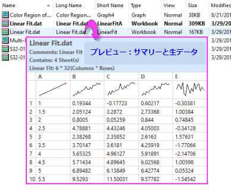

プロジェクトエクスプローラ
プロジェクトエクスプローラ
プロジェクトエクスプローラの表示または非表示
プロジェクトエクスプローラを表示または非表示にするには、
- 標準ツールバーのプロジェクトエクスプローラボタン
 をクリックするか、メインメニューから表示：プロジェクトエクスプローラを選択します（ホットキー：Alt + 1）。
をクリックするか、メインメニューから表示：プロジェクトエクスプローラを選択します（ホットキー：Alt + 1）。
- プロジェクトエクスプローラタイトルバーで右クリックして、ウィンドウのフローティング、ドッキング、自動非表示が可能です。
プロジェクトエクスプローラの概要
プロジェクトエクスプローラ(PE)は、Originプロジェクトファイル(OPJ/OPJU)の内容を管理できる機能です。
-
- プロジェクトエクスプローラは2つのパネルを持ちます。第一パネル（上部）ではOPJのフォルダ構造を表示します。サブパネル（下部）では、第一パネルで選択されたフォルダ内にあるフォルダやウィンドウが表示されます。†
- 両方のパネルで、右クリックして開くコンテキストメニューから、削除、非表示、印刷などのオプションを選択できます。表示されるメニューは、どの項目で右クリックしたかに応じて変化します。
- プロジェクトエクスプローラの下パネルで、ウィンドウの非表示、表示、削除が可能です。
- プロジェクトエクスプローラのタイトルバーを右クリックして、垂直方向の表示（上下積上げ）か水平方向（隣合う）の表示か選択できます。
- 個々の見出しをオンまたはオフにするには、詳細ビューのサブパネルを右クリックします。
- ShiftキーやCtrlキーを押しながらクリックして、サブパネル内に表示されたウィンドウの複数選択が可能です。
- サブパネルはウィンドウのさまざまな表示をサポートします。サブパネル内で右クリックして「表示モード」から次のオプションを選択します：詳細 (デフォルト), 一覧, 小さいアイコン, 大きいアイコン, 特大アイコン
- どの表示方法でも、各ウィンドウの項目上にマウスを移動するとウィンドウのコメント、内容やウィンドウプレビューを確認できます。
- 第一パネルのフォルダにカーソルを合わせると、ツールチップにフォルダの内容とオプションのコメントが表示されます。フォルダを右クリックし、プロパティ を選択してフォルダにコメントを追加します。
- サブパネル上で右クリックし保存サイズを表示にチェックを付けます。これはプロジェクトファイルを保存した際の推定サイズを表示します。外部ファイルへのリンクがある場合にのみ適用されます。
- ウィンドウを特大アイコンとして表示すると、ウィンドウが更新されるたびにその場で生成されるウィンドウのプレビュー画像が表示されます。

Note: †Origin 2018以前のバージョンでは、サブパネルは選択されたフォルダの下にサブフォルダをリストしました。以前のバージョンの方式に戻したい場合には、スクリプトウィンドウを開き（ウィンドウ：スクリプトウィンドウ）、次のように入力して<Enter>を押します。
@PEF = 1
これをデフォルト設定にするには、FAQ-708: @システム変数の値を永続的にするには?を参照してください。
|
プロジェクトエクスプローラのプレビュー
サブパネル表示では、ウィンドウにカーソルを合わせるとポップアップウィンドウが表示されます。プレビュー画像はウィンドウが更新されるとすぐに生成されます（サブパネルの更新（F5）が必要な場合があります）。

ワークブックは、次の3種類のプレビューから選択できます。
- 圧縮イメージ (デフォルト): 全ウィンドウタイプのポップアップ画像はサブパネルを特大アイコン表示に切り替えたとき、複製されます。
- サマリーとリスト表示: ポップアップ画像はブック内容のサマリー(コメントや、シートの数など)と、列ショートネーム、ロングネーム(あれば)、スパークラインのリスト表示テーブル になります。
- サマリーと生データ: ポップアップ画像はブック内容のサマリー(コメントや、シートの数など)と、列ショートネーム、スパークライン付きのワークブックの標準表示(生データ)になります。
- 
1つのブックに対して行われたプレビュー設定は、プロジェクト内のすべてのワークブックにグローバルに適用されます。プレビューはウィンドウのプロパティなので、ウィンドウプロパティダイアログで設定されます。
Note: 次のLabTalkシステム変数を使ってプロジェクトエクスプローラのプレビューを変更できます。
- ウィンドウタイプごとにプレビュー画像の使用をコントロールするには、@PESSを参照してください。
- プロジェクトワークブックのデフォルトのプレビュー形式を変更するには、@PEWPを参照してください。
- サマリーとリスト表示プレビューで表示する行数を変更するには、@WPCを参照してください。
- Ctrlキーを押したときにプレビュー画像のポップアップを有効にするかどうか設定するには、@PEKを参照してください。
プロジェクトエクスプローラのサブパネルのコンテキストメニューCtrlキーを押してプレビューを表示オプションでもこの設定が可能です。
システム変数の値を変更する方法については、FAQ-708 システム変数を永続的に変更するにはにあるシステム変数の変更を参照してください。
|
プロジェクト内のウィンドウを検索
プロジェクトエクスプローラのウィンドウプレビューに加え、プロジェクトエクスプローラの検索ダイアログを使用して、プロジェクトファイル内のウィンドウを探すことができます。
- 検索するには、プロジェクトエクスプローラフォルダ上で右クリックして、検索を選択します。
- 検索内容ボックスに検索する文字列を入力します。
- プロジェクト全体、アクティブフォルダ、アクティブフォルダとサブフォルダを検索します。
- 検索で、大文字と小文字の区別または語句の完全一致のオプション、またはワイルドカード "*" または "?" を使用するオプションがあります。
- フォルダ、グラフ、ブック、シートまたは列を検索するオプションで検索範囲を限定することもできます。
- ワークシートデータや、グラフ上のテキストオブジェクトを検索するための他のオプションも提供しています。
ウィンドウを非表示にしてプロジェクトのロードを高速化
デフォルトでは、プロジェクトウィンドウは、Originのワークスペースに表示されています。保存プロジェクトを開いたときのウィンドウの表示は、プロジェクトが保存されたときのウィンドウの表示/非表示のステータスに依存します。ワークスペース内の表示ウィンドウが増えると、プロジェクトの読み込みが遅くなります。そのような場合、ウィンドウを表示せずにプロジェクトをロードすることができます。
- ロードの際にウィンドウが表示されないようにプロジェクトを構成するには、メニューの表示：表示ウィンドウ：表示なしを選択するか、プロジェクトエクスプローラの主パネルで右クリックして表示されるウィンドウ：表示なしを選択します。この設定は、変更しない限り、セッション中で影響します。
- 他のオプションとしては、システム変数@PENを使って与えられたフォルダで表示できるウィンドウ数を制限する方法です。この設定は、初めてプロジェクトエクスプローラフォルダを切り替えたときに有効になります。この設定は、レジストリに保存され、@PENの値を変更しない限り保持されます。
- 3つ目のオプションとしては、PEフォルダを右クリックして、全ウィンドウを非表示を選択するか、ウィンドウ: 全ウィンドウを非表示メニューコマンドを選択します。このステータスはプロジェクトに保存され、プロジェクトファイルを再度開いた際にもウィンドウは非表示になります。PEの下側パネルで灰色表示のウィンドウアイコンをダブルクリックするか、上側パネルのフォルダ上で右クリックして全ウィンドウを表示を選択してウィンドウを表示します。
 | Originの動作が遅くなる原因はいくつかあります。プロジェクトの作業中にOriginの動作が遅いと思われる場合は、こちのFAQを参照してください。
|
フォルダまたはウィンドウを移動
- プロジェクト内でフォルダ/ウィンドウを他のフォルダにドラッグすると、移動できます。
プロジェクトエクスプローラーでのウィンドウ複製
- 同じフォルダ内にウィンドウを複製するには、CTRLキーを押しながら、選択したウィンドウをプロジェクトエクスプローラーのサブパネルにドラッグします。
- 他のフォルダにウィンドウを複製するには、ウィンドウをクリックして選択し、CTRLキーを押しながらウィンドウをプロジェクト エクスプローラーの主パネルの他のフォルダにドラッグします。
ウィンドウのショートカットを作成/削除
お気に入りフォルダにショートカットを追加
- PE内のウィンドウ上で右クリックまたは、ウィンドウのタイトルバーで右クリックします。
- ショートカットをお気に入りに追加を選択します。
Originのプロジェクト構造内にお気に入りフォルダが追加され、フォルダの中にウィンドウのショートカットが追加されます。
Note： お気に入りフォルダでは、ショートカットウィンドウは非表示になっています。
ほかのフォルダにショートカットを追加
- Altキーを押しながらほかのフォルダにウィンドウをドラッグします。すると、フォルダ内にショートカットが作成されます。
または
- ウィンドウのタイトルバーを右クリックして、ショートカットを追加:...を選択します。
すると、直近でアクティブだったフォルダにショートカットが作成されます。
| 例えば、
- プロジェクトエクスプローラでFolder2をアクティブにします。
- Folder1をクリックしてアクティブにしてから、Folder1のBook1のタイトルバーで右クリックし、ショートカットを追加: Folder2を選択すると、Folder2にショートカットが追加されます。
|
アクティブフォルダへのショートカットを追加
フォルダをアクティブにした状態で、別のフォルダを右クリックしてショートカット追加コンテキストメニューを選択し、アクティブなフォルダにショートカットを追加ダイアログを開きます。
このダイアログでは、アクティブなフォルダにショートカットとして表示されるウィンドウのタイプを決定できます。
ショートカットを追加するウィンドウの種類を選択したら、追加ウィンドウを重ねて表示をチェックして、アクティブフォルダ内のショートカット ウィンドウをカスケードできます。
元のフォルダに行く
ショートカットから元のフォルダに行くには
- PE内のショートカットを右クリックして、元のフォルダに行くを選択します。
または
- ショートカットウィンドウのタイトルバーを右クリックして、元のフォルダに行くを選択します。
または
- ショートカットウィンドウのタイトルバーにあるオリジナルに行くボタンをクリックします。
ショートカットを削除
ショートカットウィンドウの閉じるボタンをクリックした場合はウィンドウが非表示になるだけです。
ショートカットを削除する
- PE内のショートカットを右クリックし、削除を選択します。
または
- PE内のフォルダ上で右クリックして、ショートカットを削除を選択します（フォルダ内の全ショートカットが削除されます）。
詳細ビューで表示や列の順序を変更
プロジェクトエクスプローラのサブパネルが詳細モード（プロジェクトエクスプローラの何もない領域で右クリックして表示：詳細を選択）のとき、表示される情報をカスタマイズできます。
- 列ヘッダで右クリックして、表示したい項目を選択したり、非表示にしたい項目の選択を外します。
- 列ヘッダをドラッグして表示順を変更できます。
プロジェクトエクスプローラ内でソート
プロジェクトエクスプローラの詳細ビューに、ウィンドウの複数の属性とフォルダがリストで表示されます。
- 列ヘッダをクリックして、プロジェクトエクスプローラのウィンドウをソートします。上向き矢印は、昇順を意味しています。下向き矢印は、降順を意味しています。
- 複数属性で階層（ネスト）ソートするには、二次属性列ヘッダをクリックする前にSHIFTキーを押します。
フォルダやウィンドウの名前変更、コメント追加
- フォルダ、ウィンドウのロングネームを修正するには、フォルダ/ウィンドウで右クリックして、名前の変更かプロパティを選択します。
- 内部編集モードで名前を変更するには、フォルダやウィンドウ（サブパネルで表示されているロングネームやショートネーム列）上で左クリックし、再度クリックします。名前を入力します。
- ロングネームとショートネーム列に加えて、ウィンドウのロングネームを表示する名前列があります。LN/SNボタンを押して2つを切り替えて、ロングネームやショートネームを変更することができます。
-
- 内部編集モードでコメントを追加/編集するには、コメント列（サブパネル）で左クリックし、再度クリックします。コメントを入力します。
Note:
- Origin2015 SR1よりも前のバージョンでは、プロジェクトエクスプローラ内で名前の変更を選択して、ウィンドウロングネームを編集していました。以前の動作に戻すには、 @PERB = 0システム変数を設定します（@PERBについてはこちら）。
- 下のパネルを右クリックしてロングネームとショートネームの表示のチェックを外すことによって、詳細以外の表示モードでのみ、ロングネーム（ロングネームが存在しない場合はショートネーム）を表示するように選択できます。デフォルトでは、ロングネームとショートネームはショートネーム - ロングネームというフォーマットで表示されます。
|
フォルダノート
プロジェクトエクスプローラのフォルダにフォルダノートを追加する
- フォルダ上で右クリックしてフォルダノートを選択します。
または
- フォルダ上でクリックして表示されるミニツールバーのフォルダノートボタンをクリックします。
- フォルダのコメントがない場合は、これによりフォルダ内にフォルダノートウィンドウが追加されます。
- フォルダノートはデフォルトでOriginリッチテキストを使用します。シンタックスの変更は、メモ：シンタックスメニューから選択するか、フォルダノートウィンドウのタイトルバーを右クリックしてシンタックスを選択します（ノートウィンドウの内容の追加や編集に関してはこのページを参照してください）。
- システム変数@FNSの値を変更すると、デフォルトのシンタックスを変更できます。
- 既存のコメント（フォルダを右クリックしてプロパティを選択して設定可能）がある場合、フォルダノートにはコメントの内容がコピーされます。
- フォルダを切り替えた場合、フォルダとウィンドウツールバーを使って、固定または最小化されているかどうかに関係なく、フォルダノートは常に表示されます。
- 閉じるボタンを使ってフォルダノートを閉じた場合、フォルダに埋め込まれ、PEのフォルダを右クリックしてフォルダノートを選択した場合のみ表示されます。
- CTRLキーを押しながらフォルダ上にマウスカーソルを置くと、フォルダノートのプレビューが表示されます。フォルダコメントはプレーンテキストツールチップとして表示されます。
フォルダとウィンドウツールバー
フォルダとウィンドウツールバーを使用するとプロジェクトエクスプローラ (PE) のフォルダを簡単に切り替えたり (シーソー/Seesaw)、アクティブなウィンドウを前のフォルダにショートカットとして追加したりできます。さらに、アクティブなウィンドウを所定の位置に固定したり、アクティブなフォルダ内のウィンドウを整列（ウィンドウ：ウィンドウの整列<前回どおり>）が可能です。
- 前のフォルダ: 現在のフォルダから一つ前のフォルダに戻ります。
- 次のフォルダ: 前のフォルダから現在のフォルダに戻ります。
- Seesaw: 2つのフォルダを交互に切り替えます(Ctrl + Alt + X)。メニューではウィンドウ: シーソーを選択します。
- シーソー用にアクティブウィンドウのショートカットを追加: アクティブウィンドウを前のフォルダにショートカットとして共有します(Ctrl + Shift +F7)。 他の方法として、ウィンドウタイトルを右クリックして、前のフォルダにショートかとを追加できます。
- 前のフォルダからショートカットを追加: ウィンドウの種類によって現在のフォルダにショートカットを追加します。
- ウィンドウを整列 (前回どおり): ウィンドウ: ウィンドウを整列<前回どおり>メニューと同じです。
- アクティブウィンドウを固定: ウィンドウを固定して、ウィンドウを整列（前回どおり）をクリックしたときに除外します。他の方法として、ウィンドウタイトルを右クリックしてウィンドウを固定（固定解除）できます。
グラフをスライドショー表示またはPowerPointに送る
- プロジェクト内のグラフのスライドショーを表示するには、グラフを含むプロジェクトエクスプローラフォルダを右クリックし、グラフのスライドショーを選択します。
- 特定のワークシート列（複数可）から作図されたすべてのグラフのスライドショーを表示するには、列を右クリックして、列に関連するグラフのスライドショーを選択します。
- グラフをPowerPointファイルに送るには、グラフを含むプロジェクトエクスプローラフォルダで右クリックし、PowerPointにグラフを送るを選択します。
スライドショーまたはPowerPointのグラフ順序を変更
- プロジェクトエクスプローラ（PE）の下部パネルを「詳細」ビューに表示します。
- スライド列が詳細ビューに表示されていることを確認します。列ヘッダを右クリックして、スライドチェックボックスがオンになっていることを確認します。スライド列が表示されない場合は、プロジェクトエクスプローラの幅を広げてください。グラフおよびレイアウトウィンドウの場合、スライドインデックス番号が表示されます。これは、スライドショーまたはPowerPointにグラフが表示される順序になります。
- スライド列ヘッダをクリックして、下部パネルをスライドインデックス番号で並べ替えます。スライド列ヘッダー横に上/下矢印が表示されます。Note: このステップはスキップできません。
- 下部パネルをスライドインデックスで並べ替えた状態で、プロジェクトエクスプローラ(PE)のグラフ/レイアウトウィンドウを上下にドラッグして、スライドインデックス番号を変更します。
- スライドショーでグラフをスキップするには、プロジェクトエクスプローラ(PE)のウィンドウを右クリックして、スライドにしないを選択します。
プロジェクトの一部を新しいプロジェクファイルとして保存
- プロジェクトファイル内のフォルダを新しいプロジェクトとして保存するには、フォルダ上で右クリックし、プロジェクトとして保存を選択します。
| Note: Origin 2020から、プロジェクトエクスプローラの非アクティブフォルダ上で右クリックしてプロジェクトとして保存を選択すると、表示/非表示のステータスに関係なく、全プロジェクトウィンドウが開いたうえで非表示になります。開くときの表示/非表示ステータス保存のデフォルトが変更されました。システム変数@FSKを参照してください。
|
複数プロジェクトからデータを統合
1つのセッションでは、1つのプロジェクト（OPJまたはOPJU）しか開く事ができません。しかし、複数プロジェクトからのデータを統合するためのオプションがいくつかあります。
- プロジェクトファイルの追加: ほかのプロジェクトファイルの内容を現在のプロジェクトに追加できます。プロジェクトエクスプローラの上部パネルでフォルダを選択し、ファイル: プロジェクトの追加を選択するか、フォルダ上で右クリックしてプロジェクトの追加を選択します。プロジェクトを追加する新しいフォルダを作成するか聞かれます。いいえ を選択し、(a) 追加するプロジェクトのルートフォルダにウィンドウがなく、(b) フォルダが一つの場合、目的のフォルダに直接内容が追加されます。そうでない場合、新しいフォルダがプロジェクトファイルに追加され、名前の競合を避けるようなフォルダ名が付きます。
- ほかのインスタンスを実行してコピー: ほかのOriginウィンドウを開き、元のOriginウィンドウ中からデータをコピーしてほかのプロジェクト中に貼り付けます。Origin 2019bから、プロジェクトエクスプローラを使ってワークブックやフォルダをほかのプロジェクトコピーできます。プロジェクトエクスプローラの上部パネルのフォルダか、下パネルのワークブックを右クリックしてショートカットメニューからコピーを選択します。コピーしたフォルダを貼り付けるには、上部パネルで右クリックして貼り付けを選択します。ワークブックウィンドウを貼り付けるには、上部パネルで目的のフォルダを選択し、下部パネルで右クリックして貼り付けを選択します。
| この操作で、一つのプロジェクト内で ワークブックやフォルダをコピーすることもできます。
|
フォルダを複製
- フォルダを右クリックし、コンテキストメニューからフォルダを複製を選択します。
- フォルダのアイコンをクリックすると、フォルダのミニツールバーが表示されます。ミニツールバーのフォルダを複製ボタンをクリックします。
- プロジェクトエクスプローラで複製されたフォルダをクリックして選択し、Ctrl+Cキーを押して親フォルダをクリックし、Ctrl+Vを押します。
Origin内のグラフへのコピーと貼り付け
- すべてのウィンドウを含むフォルダをOriginの別のインスタンスにコピー＆ペーストするには、フォルダを右クリックしてコピー/貼り付けを選択します。

Originビューアでフォルダを非表示にする
OriginビューアはOriginプロジェクトファイル(OPJファイル)やOriginのウィンドウファイル(OGG, OGW, OGM)に含まれる情報を表示や、コピーが可能な無料配布のアプリケーションです。ビューアを使用している人がデータを表示またはコピーできないようにする場合は、次の操作を行います。
- プロジェクトエクスプローラのフォルダ上で右クリックし、ビューアで非表示を選択します。すると、フォルダアイコンに鍵が表示されます。